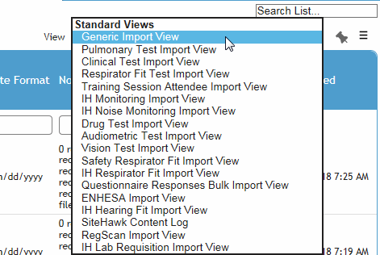
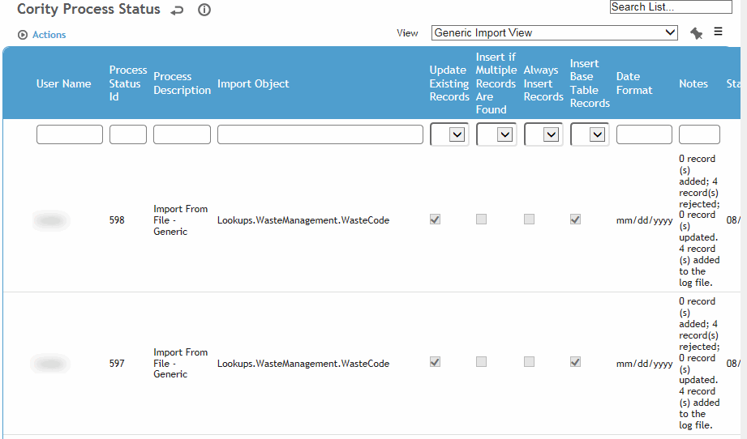
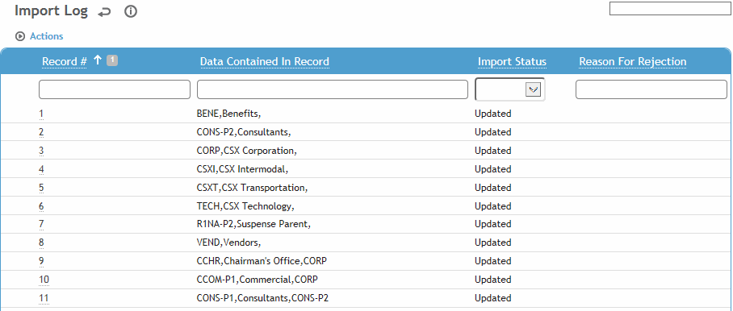
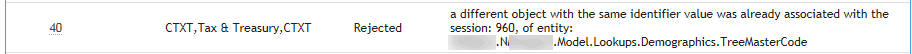
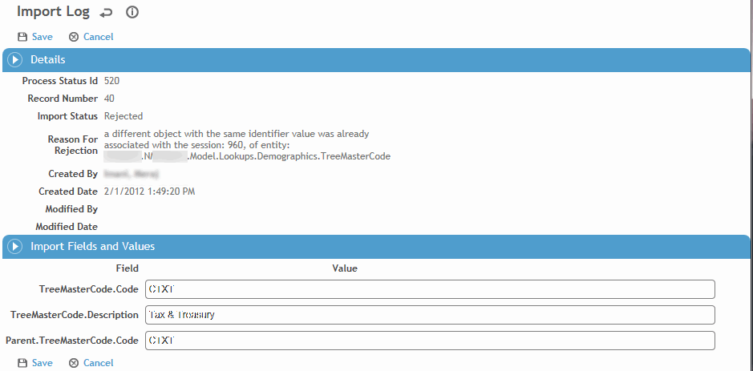

The Process Status and Log presents a list of all the executed imports/transfers in the application and specific details about that process. If an import contains parent and child records, the log will display a separate entry for each parent and child record. If this list is accessed from the Administrator menu, standard views will be available to see the log of the module-specific device/file transfers, bulk questionnaire import, as well as the Generic Import utility. If the list is accessed from the Process Status and Log action on a specific import form, only the view for that import will be available.
You can create custom import log views using the create/clone view functionality; for more information, see Creating a New View.
You can create custom reports based on this log, including joining the Process Status and Import Logs; for more information, see Working with Ad Hoc Reports.
If a record was rejected, you can view and correct the error and reprocess the record.
In the Administrator menu, click Process Status and Log.
Select the appropriate view for the type of import.

The Process Status lists provides a summary of each import including how many records were added, rejected or updated.

Click a link to view an import’s log. This is a list of each record that was attempted to be imported, the import status (whether that record was added, rejected or updated), and reason for rejection if applicable.

If a record was rejected, click the Record# link to view and change the value of any field. For example, if a record was rejected because it was missing an employee number, an EmployeeNumber field is available for you to complete.


If you changed any fields, click Save. Return to the Import Log and choose Actions»Re-process rejected record(s). Cority will attempt to reprocess all rejected records for the corresponding Process Status Id.